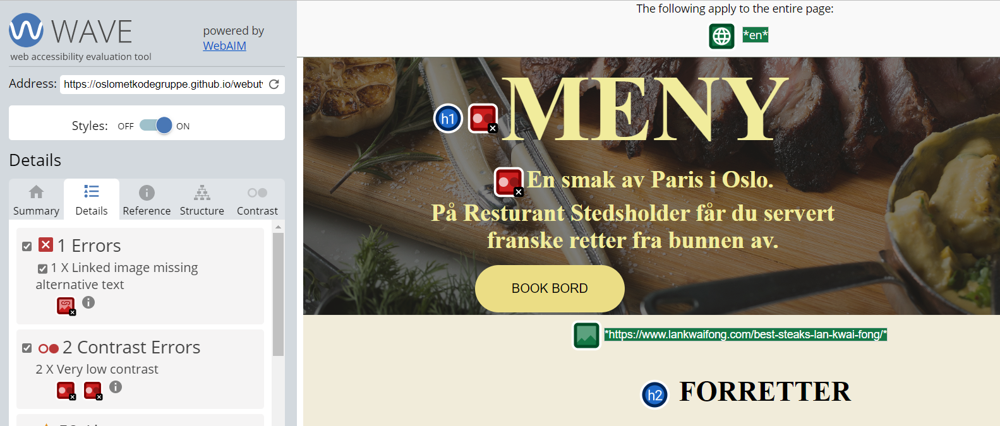

Velkommen til tilgjenglighets siden!
Her skriver vi hva vi gjorde for å gjøre siden vår så tilgjenlig som mulig.
Vi brukte verktøy som color picker generator til å velge farger for at det skal vere god kontrast mellom teksten og bakgrunnen. Det gjør det enklere for svaksynte å løse teksten. Vi sørget også for å ha stor fontstørelse på teksten slik at den er enkel å lese både på mobil og på avstand.
Et av punktene i Universal Design handler om forståelig informasjon. Dermed har vi tatt i bruk ofte store bokstaver for å markere det viktigste. Et annet prinsipp er at det er like muligheter for bruk på ulike skjermer, som for eksempel mobil og datamaskiner. Dette har vi fikset på alle sidene våre slike at det skal funke på de ulike enhetene.
Vi kjørte koden vår gjennom et web accsessibility evaluation tool

Wave la merke til at logoen vår ikke hadde alternative text og at flere av bildene våre hadde samme titel og alternative tekst (navnet til fotografen) Det fikset vi ved å skrive om på alternative teksten til å beskre hva som kjer på bildene
På meny siden fikk vi beksjed om at det var for lite kontrast mellom bildet og teksten. Det gjorde det vanskligere å leste hva som sto der. Vi løste problemet med å endre på fargen til teksten og med å redusere brightness verdien til bildet.